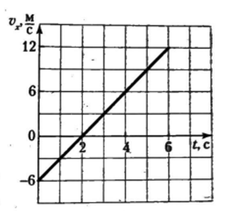
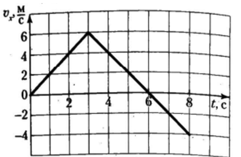
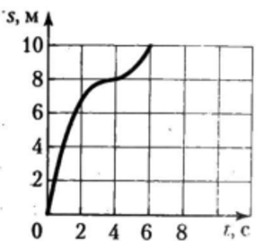

Выберите вариант ответа или введите полученное числовое значение.
Задача 1
Дано то же уравнение: $x = 5 + 2t - 3t^2$. Чему равна проекция ускорения $a_x$?
Коэффициент перед $t^2$ умножаем на 2.
Ответ: в ($-6$).
Задача 2
Автомобиль движется со скоростью $20\text{ м/с}$ и начинает тормозить с ускорением $4\text{ м/с}^2$. Через сколько секунд он остановится?
Выражаем время через основную формулу ускорения:
$$t = \frac{v - v_0}{a}$$
конечная скорость $v = 0\text{ м/с}$.
Ответ: б ($5\text{ с}$).
Задача 3
Автомобиль ехал со скоростью, модуль которой $v_0 = 72\text{ }\frac{\text{км}}{\text{ч}}$. При аварийном торможении он остановился через промежуток времени $\Delta t = 5{,}0\text{ с}$. Если движение автомобиля при торможении было равноускоренным и прямолинейным, то длина $s$ тормозного пути равна:
Тормозной путь автомобиля равен модулю перемещения:
$$s = \Delta r = v_0 \Delta t - \frac{a \Delta t^2}{2},$$
где $a$ — модуль ускорения автомобиля. Так как конечная скорость автомобиля равна нулю, то модуль ускорения $a = \frac{v_0}{\Delta t}$.
Из записанных уравнений найдем ответ:
$$s = \frac{v_0}{2} \Delta t = 50\text{ м}.$$
Ответ: вариант 4 ($50\text{ м}$).
Задача 4
Мотоцикл двигался равноускоренно и прямолинейно с ускорением, модуль которого $a = 1{,}5\text{ }\frac{\text{м}}{\text{с}^2}$. Если скорость движения мотоцикла на пути $s = 80\text{ м}$ увеличилась в $n = 4$ раза, то модуль начальной скорости $v_0$ движения мотоцикла равен:
Путь мотоцикла равен модулю перемещения: $s = \Delta r = \frac{v^2 - v_0^2}{2a}$. Модуль конечной скорости движения мотоцикла $v = n v_0$. Из записанных уравнений следует:
Сначала байдарка плыла равномерно, а затем стала равноускоренно и прямолинейно разгоняться с ускорением, модуль которого $a = 0{,}4\text{ }\frac{\text{м}}{\text{с}^2}$. Если при разгоне байдарка проплыла путь $s = 30\text{ м}$ за промежуток времени $\Delta t = 10\text{ с}$, то к концу этого промежутка времени она достигла скорости, модуль которой $v$ равен:
Путь байдарки при равноускоренном прямолинейном движении равен модулю перемещения:
$$s = \Delta r = v_0 \Delta t + \frac{a \Delta t^2}{2}.$$
Отсюда модуль начальной скорости движения байдарки:
$$v = v_0 + a \Delta t = 5\text{ }\frac{\text{м}}{\text{с}}.$$
Ответ: вариант 3 ($5\text{ м/с}$).
Задача 6
При начальной скорости, модуль которой $v_{01} = 15\text{ }\frac{\text{км}}{\text{ч}}$, тормозной путь автомобиля $s_1 = 1{,}5\text{ м}$. Если торможение происходит равноускоренно и прямолинейно, то при начальной скорости, модуль которой $v_{02} = 90\text{ }\frac{\text{км}}{\text{ч}}$, и прежнем ускорении тормозной путь $s_2$ автомобиля равен:
В основе решения лежит формула для проекции перемещения тела при равноускоренном движении:
$$\Delta r_x = \frac{v_x^2 - v_{0x}^2}{2a_x}$$
Так как автомобиль тормозит до полной остановки, его конечная скорость равна нулю ($v_x = 0$). Подставляем ноль:
$$s = \frac{0 - v_{0x}^2}{2a_x} \implies s = \frac{-v_{0x}^2}{2a_x}$$
Тело начало двигаться из состояния покоя равноускоренно и прямолинейно. Если в течение пятой секунды от начала движения путь тела $s_5 = 27\text{ м}$, то модуль ускорения $a$ движения тела равен:
Воспользуемся методом, описанным в предыдущей задаче. За первую секунду тело прошло путь $s_1 = \frac{s_5}{9} = 3{,}0\text{ м}$. Так как $s_1 = \frac{a \Delta t_1^2}{2}$, где $\Delta t_1 = 1{,}0\text{ с}$, то:
$$a = 6{,}0\text{ }\frac{\text{м}}{\text{с}^2}.$$
Ответ: вариант 2 ($6{,}0\text{ м/с}^2$).
Задача 8
Трактор движется равноускоренно и прямолинейно. Если в первые два равных последовательных промежутка времени по $\Delta t = 3\text{ с}$ каждый путь трактора $s_1 = 12\text{ м}$ и $s_2 = 30\text{ м}$, то модуль начальной скорости $v_0$ движения трактора равен:
Модуль перемещения трактора, равный его пути, за промежуток времени $\Delta t$ и $2\Delta t$ соответственно $\Delta r_1 = v_{0x}\Delta t + \frac{a_x \Delta t^2}{2}$ и $\Delta r_1 + \Delta r_2 = v_{0x} \cdot 2\Delta t + \frac{a_x (2\Delta t)^2}{2}$. Подставив данные задачи и преобразовав полученные уравнения, найдем ответ:
$$v_0 = 1\text{ }\frac{\text{м}}{\text{с}}.$$
Ответ: вариант 1 ($1\text{ м/с}$).
Задача 9
Кинематические законы движения двух тел вдоль оси $Ox$ имеют вид $x_1(t) = A_1 + B_1 t + C_1 t^2$ и $x_2(t) = A_2 + B_2 t + C_2 t^2$, где $A_1 = 0{,}5\text{ м}$, $B_1 = 10\text{ }\frac{\text{м}}{\text{с}}$, $C_1 = 0{,}4\text{ }\frac{\text{м}}{\text{с}^2}$, $A_2 = 2{,}5\text{ м}$, $B_2 = -6\text{ }\frac{\text{м}}{\text{с}}$, $C_2 = 2\text{ }\frac{\text{м}}{\text{с}^2}$. Тела будут иметь одинаковые скорости ($\vec{v}_1 = \vec{v}_2$) в момент времени $t$, равный:
Запишем уравнение проекции скорости движения каждого тела, подставив данные задачи: $v_{1x} = 10 + 0{,}8t$ и $v_{2x} = -6 + 4t$. Учитывая условие задачи, $v_{1x} = v_{2x}$, найдем ответ:
$$t = 5\text{ с}.$$
Ответ: вариант 2 ($5\text{ с}$).
Задача 10
В момент начала отсчета времени два тела начали двигаться из одной точки вдоль оси $Ox$. Если зависимости проекций скоростей движения тел от времени имеют вид $v_{1x} = A + Bt$, где $A = 21\text{ }\frac{\text{м}}{\text{с}}$, $B = -1{,}2\text{ }\frac{\text{м}}{\text{с}^2}$, и $v_{2x} = C + Dt$, где $C = -12\text{ }\frac{\text{м}}{\text{с}}$, $D = 1{,}0\text{ }\frac{\text{м}}{\text{с}^2}$, то тела встретятся в момент времени $t$, равный:
Запишем кинематические законы движения двух тел, подставив данные задачи: $x_1 = 21t - 0{,}6t^2$ и $x_2 = -12t + 0{,}5t^2$. В момент встречи координаты тел будут одинаковыми: $x_1 = x_2$. Из записанных уравнений следует ответ:
$$t = 30\text{ с}.$$
Ответ: вариант 5 ($30\text{ с}$).
Задача 11
Материальная точка движется вдоль координатной оси $Ox$. На рисунке 8 показана зависимость проекции скорости $v_x$ точки от времени $t$. Проекция ускорения $a_x$ точки равна:

Рис. 8
Воспользуемся данными, представленными на графике (рис. 8): промежуток времени $\Delta t = 6\text{ с}$, проекция начальной скорости $v_{0x} = -6\text{ }\frac{\text{м}}{\text{с}}$ и проекция конечной скорости $v_x = 12\text{ }\frac{\text{м}}{\text{с}}$. Проекция ускорения материальной точки:
На рисунке 11 представлен график зависимости проекции скорости $v_x$ материальной точки, движущейся вдоль оси $Ox$, от времени $t$. Путь $s$, пройденный точкой за промежуток времени $\Delta t = 8\text{ с}$, равен ... м.

Рис. 11
Введите путь в метрах ($\text{м}$):
Проекция перемещения тела численно равна площади между графиком $v_x(t)$ и осью времени $Ot$: $\Delta r_{1x} = 18\text{ м}$ (за время от $t_1 = 0\text{ с}$ до $t_2 = 6\text{ с}$); $\Delta r_{2x} = -4\text{ м}$ (за остальное время). Путь:
Зависимость проекции скорости тела, движущегося вдоль оси $Ox$, от времени задана уравнением $v_x = A + Bt$, где $A = 8\text{ }\frac{\text{м}}{\text{с}}$, $B = -4\text{ }\frac{\text{м}}{\text{с}^2}$. Путь $s$, пройденный телом за промежуток времени $\Delta t = 6{,}0\text{ с}$, считая от начала отсчета времени, равен ... м.
Введите путь в метрах ($\text{м}$):
Сначала определим момент времени $t_0$, когда тело остановится. Из уравнения $0 = 8 - 4t_0$ время $t_0 = 2\text{ с}$. Найдем путь, пройденный телом до остановки: $s_1 = \Delta r_{1x} = 8t_0 - 2t_0^2 = 8\text{ м}$. Также найдем путь тела, пройденный им после остановки:
Задачу можно решить по-другому, построив график проекции скорости $v_x(t)$. Площадь между графиком и осью времени численно равна проекции перемещения тела. Путь равен сумме модулей перемещений тела на отдельных участках.
Ответ: $40\text{ м}$.
Задача 14
Кинематический закон движения тела вдоль оси $Ox$ имеет вид $x(t) = A + Bt + Ct^2$, где $A = 3{,}0\text{ м}$, $B = 6{,}0\text{ }\frac{\text{м}}{\text{с}}$, $C = -0{,}50\text{ }\frac{\text{м}}{\text{с}^2}$. За промежуток времени от $t_1 = 1{,}0\text{ с}$ до $t_2 = 9{,}0\text{ с}$ тело пройдет путь $s$, равный ... м.
Введите путь в метрах ($\text{м}$):
Данный закон: $x(t) = 3 + 6t - 0{,}5t^2$
Общий вид: $x(t) = x_0 + v_0 t + \frac{at^2}{2}$
Ускорение: так как перед $t^2$ стоит половина ускорения $\left(\frac{a}{2} = -0{,}5\right)$, то полное ускорение равно: $a = -1\text{ м/с}^2$.
Формула скорости: $v = v_0 + at = 6 - t$.
Тело останавливается и разворачивается, когда $v = 0$, то есть в момент времени $t_{\text{ост}} = 6\text{ с}$. Этот момент делит движение на два участка.
Время $6\text{ с}$ попадает в заданный отрезок от $1\text{ с}$ до $9\text{ с}$. Это значит, что путь нужно считать в два этапа: до разворота и после него.
Найдем координаты тела в ключевые моменты времени:
Тело двигалось вдоль оси $Ox$. На рисунке 12 представлен график зависимости пути $s$, пройденного телом при равноускоренном прямолинейном движении, от времени $t$. Если с момента начала отсчета времени прошло $\Delta t = 6\text{ с}$, то модуль перемещения $\Delta r$ тела за это время равен ... м.

Рис. 12
Введите модуль перемещения в метрах ($\text{м}$):
Из графика (рис. 12) следует, что в момент времени $t_1 = 4\text{ с}$ тело остановилось, совершив перемещение $\Delta r_1 = 8\text{ м}$. В течение последних двух секунд тело двигалось в обратном направлении, совершив перемещение, модуль которого $\Delta r_2 = 2\text{ м}$. Поэтому за время $\Delta t$ модуль перемещения тела:
$$\Delta r = 6\text{ м}.$$
Ответ: $6\text{ м}$.
Задача 16
Автомобиль первую половину пути двигался равномерно со скоростью, модуль которой $v_1 = 36\text{ }\frac{\text{км}}{\text{ч}}$, а вторую — равноускоренно и прямолинейно. Если в конце движения модуль скорости автомобиля $v_2 = 20\text{ }\frac{\text{м}}{\text{с}}$, то его средняя скорость $\langle v \rangle$ на всем пути равна ... м/с.
Введите среднюю скорость в метрах в секунду ($\text{м/с}$):
Средняя скорость движения автомобиля на второй половине пути:
Средняя скорость на всем пути $\langle v \rangle = \frac{s}{\Delta t_1 + \Delta t_2}$, где $s$ — весь путь. Промежуток времени движения автомобиля на первой половине пути $\Delta t_1 = \frac{s}{2v_1}$, на второй — $\Delta t_2 = \frac{s}{2\langle v_2 \rangle}$. Выполнив математические преобразования, найдем среднюю скорость движения автомобиля:
Тело, начальная скорость и координата которого равны нулю, движется по направлению оси $Ox$. Зависимость модуля скорости движения тела от его координаты имеет вид $v(x) = A\sqrt{x}$, где $A = 2{,}0\text{ }\frac{\sqrt{\text{м}}}{\text{с}}$. В момент времени $t = 5{,}0\text{ с}$ модуль скорости $v$ движения тела равен ... м/с.
Введите модуль скорости в метрах в секунду ($\text{м/с}$):
Из данного в условии уравнения следует: $x = \frac{v^2}{A^2}$. Запишем формулу проекции перемещения при равноускоренном прямолинейном движении: $\Delta r_x = \frac{v_x^2 - v_{0x}^2}{2a_x}$. Учитывая, что $x_0 = 0\text{ м}$ и $v_0 = 0\text{ }\frac{\text{м}}{\text{с}}$, последняя формула принимает вид $x = \frac{v^2}{2a}$. Сравнивая формулы, записанные для координаты тела, приходим к выводу, что движение тела является равноускоренным. Найдем модуль ускорения тела:
В момент времени $t$ модуль скорости движения тела:
$$v = at = 10\text{ }\frac{\text{м}}{\text{с}}.$$
Ответ: $10\text{ м/с}$.
Задача 18
Автобус двигался по прямолинейному участку дороги со скоростью, модуль которой $v = 64{,}8\text{ }\frac{\text{км}}{\text{ч}}$. На дороге сидел заяц. Когда автобус приблизился к зайцу на расстояние $s = 54\text{ м}$, он равноускоренно побежал вперед в направлении движения автобуса. Чтобы избежать столкновения, заяц должен бежать с минимальным ускорением, модуль $a_{\text{min}}$ которого равен ... дм/с$^2$.
Введите ускорение в дециметрах на секунду в квадрате ($\text{дм/с}^2$):
Чтобы автобус не врезался в зайца, в самый критический момент их скорости должны стать одинаковыми (автобус догонит зайца, но не ударит его, а просто поровняется по скорости).
Найдем время $t$ до этого момента:
Скорость зайца при разгоне с места равна $v_{\text{заяц}} = at$. Приравняем её к скорости автобуса:
$$at = v \implies t = \frac{v}{a}$$
Запишем формулу для пройденных путей за это время:
Автобус едет равномерно, его путь: $s_{\text{автобус}} = v \cdot t$
Заяц разгоняется, его путь: $s_{\text{заяц}} = \frac{at^2}{2}$
Расстояние $s$, на которое автобус изначально опережал зайца, находится как разность пути автобуса ($s_{\text{автобус}}$) и пути зайца ($s_{\text{заяц}}$):
$$s = s_{\text{автобус}} - s_{\text{заяц}}$$
Подставляем их в главную формулу разности ($s = s_{\text{автобус}} - s_{\text{заяц}}$):
$$s = v \cdot t - \frac{a \cdot t^2}{2}$$
Теперь подставляем время. Мы знаем, что критическое время до выравнивания скоростей равно $t = \frac{v}{a}$. Подставим эту дробь вместо каждой буквы $t$:
$$s = v \cdot \left(\frac{v}{a}\right) - \frac{a}{2} \cdot \left(\frac{v}{a}\right)^2$$